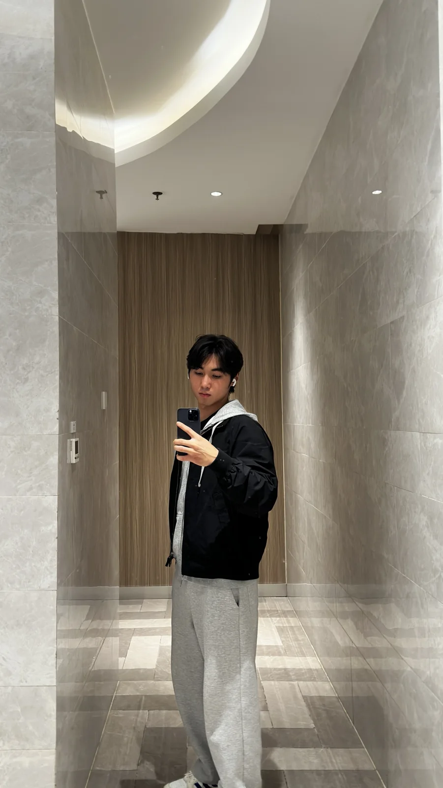
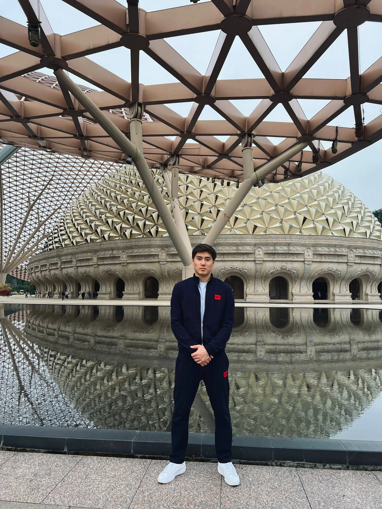

11
После 11 класса
Самый простой путь: аттестат, язык и документы — и можно подавать на бакалавриат или языковую программу.
9
После 9 класса
Тоже возможно. Подберём маршрут и программу под ваш возраст и уровень подготовки.
Помогаем разобраться в возможностях китайских университетов и пройти путь поступления — от первого выбора до подготовки к переезду.
Самый простой путь: аттестат, язык и документы — и можно подавать на бакалавриат или языковую программу.
Тоже возможно. Подберём маршрут и программу под ваш возраст и уровень подготовки.
Подбираем образовательный путь с учётом вашего уровня языка, академической подготовки, бюджета и целей.
Изучение китайского языка в университете Китая. Подходит тем, кто хочет адаптироваться к стране и подготовиться к дальнейшему обучению.
Узнать подробнее ↗Подбор университета и специальности, проверка требований и сопровождение подачи документов на программу бакалавриата.
Узнать подробнее ↗Подготовительный языковой этап с последующим переходом на бакалавриат — если выбранный университет и условия программы это предусматривают.
Узнать подробнее ↗Подбор программы магистратуры, проверка требований университета и сопровождение подачи документов.
Узнать подробнее ↗Начните с бесплатного общения или выберите персональный часовой звонок с одним из основателей.
Напишите нам в удобный мессенджер: ответим на общие вопросы, поможем сориентироваться в вариантах обучения и подскажем, с чего начать.
Индивидуальный звонок на 60 минут с подробным разбором вашей ситуации, вариантов поступления, университетов, специальностей, грантов и дальнейших шагов. Вы сами выбираете консультанта — Сыймыка или Арсена.
Подбор программ, документы, подача и организационные шаги. Ориентируемся на скидочные и грантовые программы.
Применяется, если по итогам рассмотрения заявок скидки и гранты получить не удалось.
Мы ориентируемся на скидочные и грантовые программы и подаём документы на все доступные. Если по итогам рассмотрения заявок скидок и грантов не будет, стоимость пересчитывается до $1,490, а разница в $500 возвращается. Порядок, основания и сроки возврата прописаны в договоре DEIKIN, с которым можно ознакомиться до начала сотрудничества.
Университетские сборы, виза и личные расходы оплачиваются отдельно.
Вы понимаете, что происходит, какие документы нужны и какой следующий шаг предстоит.
Узнаём ваши цели, образование, уровень языка и бюджет.
Составляем список подходящих университетов и требований.
Помогаем подготовить пакет документов и пройти этап подачи.
Разбираем дальнейшие шаги: зачисление, виза и подготовка к поездке.
Два специалиста, которые развивают проект и помогают студентам ориентироваться в образовательных возможностях Китая.


DEIKIN помогает студентам из Кыргызстана и Центральной Азии ориентироваться в системе высшего образования Китая.
Мы соединяем информацию об университетах, требованиях и сроках в понятный план действий. Наша задача — объяснить реальные варианты, заранее обозначить ограничения и помочь пройти каждый согласованный этап без лишней путаницы.
Университеты, с которыми связана учёба основателей и рабочее взаимодействие команды по вопросам поступления.
Если не нашли ответ — оставьте заявку, и мы разберём вашу ситуацию индивидуально.
Расскажите немного о себе. Мы изучим вводные данные и свяжемся с вами, чтобы обсудить возможные варианты обучения в Китае.